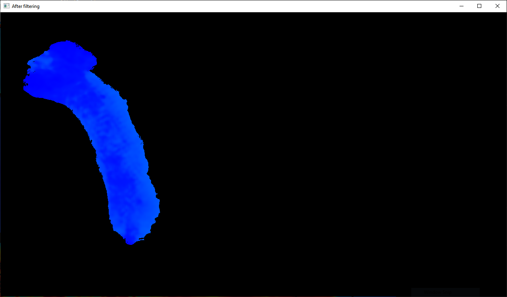
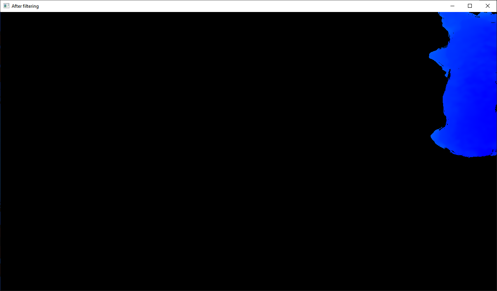
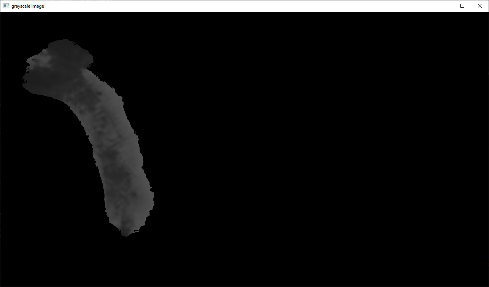
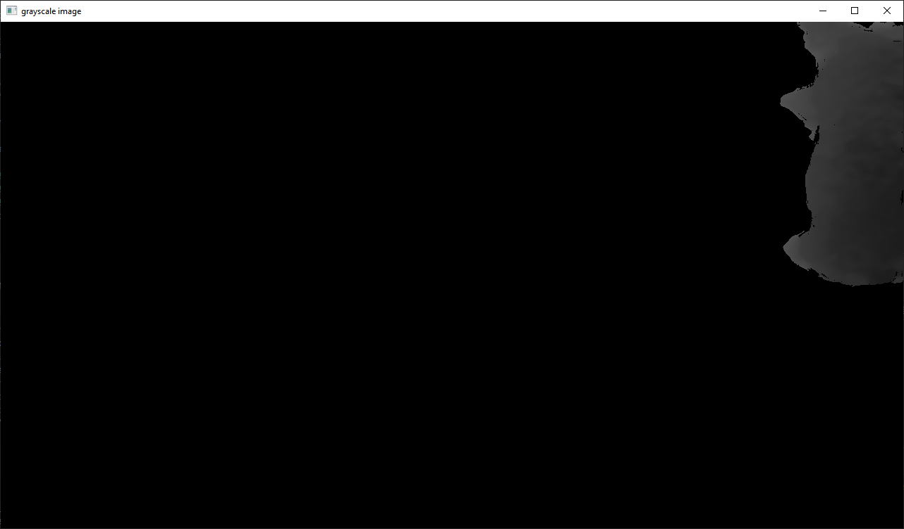
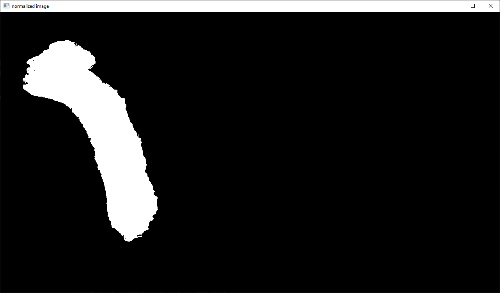
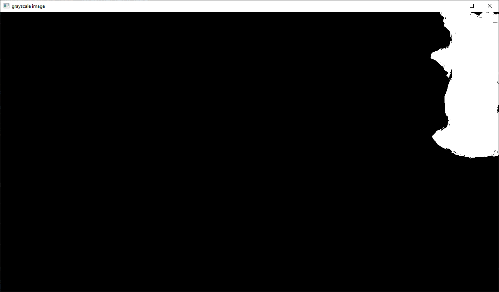
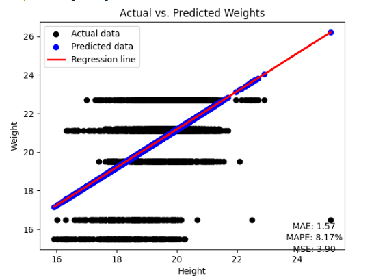
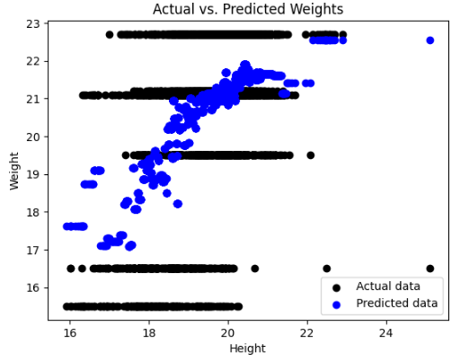

In the realm of precision agriculture, the accurate estimation of livestock weight is pivotal for optimal farm management. Traditional methods for weighing pigs are often stressful for the animals and can lack precision. This project introduces a novel, non-invasive approach to estimate pig weight utilizing depth images, which enhances accuracy and reduces animal stress. By applying a Gaussian Mixture-based Segmentation Algorithm for background filtering and converting images to grayscale to extract depth information, we develop a machine learning regression and XG Boost model that correlates the mean pixel height from depth images with the actual weights of pigs. The model was trained and validated on a dataset comprising over 5000 depth images from the Virginia Tech Agriculture Department and Dr. Sook Shin Ha's Smartfarm Research Group, achieving an accuracy of 91.83% using linear regression and accuracy of 92.13% by XG Boost model. This method holds promise for revolutionizing livestock management by offering a rapid, accurate, and humane weight estimation technique. While the approach is robust, certain uncertainties related to environmental variables remain, which future research will aim to address.
Ensuring accurate and stress-free measurement of livestock weight is essential for monitoring health, growth, optimizing feeding strategies, and identifying animals for harvest. The conventional methods for measuring pig weight are either stressful for the animals or not adequately accurate. This project aims to develop a non-invasive, and accurate model to estimate the weight of a pig using depth images, providing a rapid and precise weight estimation method to farmers.
• Background Filtering: Use Gaussian Mixture-based Segmentation Algorithm (GMM) to remove the background and leave a complete image of the object.
 
good example - applied GMM bad example - applied GMM
• Depth Information Translation: Convert the image from RGB to Grayscale for extracting depth information.
 
good example - grayscale bad example - grayscale
• Pixel Height Extraction: Extract the height information of each pixel in the image and take the average of all pixels as the height value.
 
good example - normalized bad example - normalized
• Weight and Height Collection: Organize the height and weight data and create a table for training and analysis by a machine learning model.
| Name | Mean Height | Weight (kg) |
|---|---|---|
| Good example | 21.164 | 15.5 |
| Bad example | 18.723 | 16.5 |
• Model Development: Constructed two machine learning models that are linear regression model and XG Boost model that correlate extracted feature that is mean of height of pixel from depth images with actual pig weights.
• Training & Validation: Train and validate the model using a dataset of depth images matched with actual weight measurements.
The dataset for this project was provided by the Dr. Gota Morota from Virginia Tech Agriculture Department and Dr. Sook Shin Ha's Smartfarm Research Group, featuring over 5000 depth images of individual piglets. Throughout the usage of the dataset, we adhered to all requirements set by the providers, ensuring that the dataset is not disclosed without consent.
• Depth image collection: Top-view image data are obtained from a depth sensor camera, capturing approximately 3 minutes of image streams each day, with captures occurring every 6 seconds.
• Weight measurement: Each day, the piglet is placed on a scale and its weight is manually recorded, repeating the same procedure every day.
• Data Split: The dataset encompasses the weight information of a single piglet over two weeks, and it was randomly divided into 40% for training and 60% for validation for analysis.
• Model Training: Utilized 40% of data as training subset to develop and refine the machine learning model.
• Model Evaluation: Validated the model using the validation subset that comprises of 60% of total data to get the accuracy.
• Depth-Weight Relationship Analysis: Experimentally determine the relationship between depth value and actual pig weight.
• Model Performance Evaluation: Test model predictive capabilities under different conditions (e.g., varying pig poses, sizes, lighting).
We established a relationship between pixel height, pig weight and developed a Linear Regression model offering estimations with an accuracy of 91.83%, and, a XG Boost model offering accuracy of 92.13%. XG Boost model showed slightly better results than Linear regression models.


Linear regression result XG boost result
Due to differences in camera angles, the piglet produces varying pixel occupancy when in different positions. These variations affect the accuracy of the data. Sometimes, when the piglet is outside or at the edge of the camera's area, this also impacts the data's accuracy.
This project is a Computer Vision project, with a greater focus on image processing rather than model training. Therefore, we only used simple linear regression and XG Boost model, instead of more complex deep learning models.
This study presents a breakthrough in livestock management with a depth-image-based, computer vision, and machine learning framework for pig weight estimation, achieving the highest accuracy of 92.13%. The method offers a humane alternative to conventional practices, minimizing animal stress. Despite high accuracy, environmental factors can affect image quality and measurement precision. Future iterations of this project should explore deep learning techniques to enhance the model's complexity handling and enable real-time analysis, thus addressing current limitations and broadening the system's robustness and applicability in precision farming.